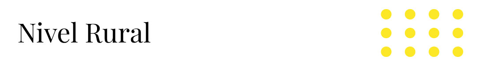
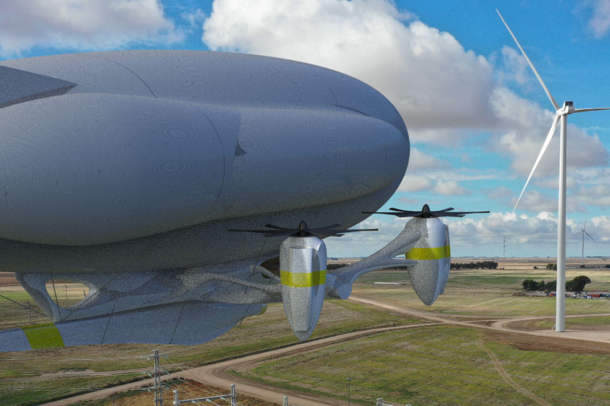
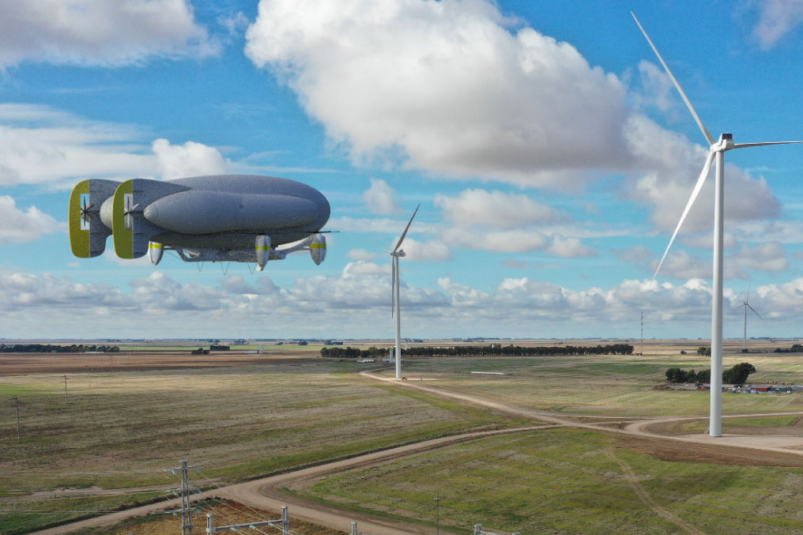

Electromovilidad N°5
 Dentro de las áreas abordadas por el proyecto se considera la movilización de recursos fuera de las zonas urbanas donde no hay caminos de acceso, lo que es aprovechado en términos de electromovilidad para generar nuevos métodos de transporte como lo es una aeronave híbrida. La gracia de ésta, es la versatilidad de movimiento que ofrece junto con su capacidad de llevar grandes cargas a una velocidad moderada, permitiendo ahorrar costos en construcción de caminos.

Funcionamiento
Con respecto a su funcionamiento, al ser una aeronave híbrida se basa tanto en el concepto de un dirigible, como en el de un dron. Ya que cuenta con dos partes principales, el globo que permite un grado de sustntación en el aire, levantando la mayor parte de la carga, y un dron que otorga la movilidad, levanta parte de la carga, y reduce el consumo de hélio del globo. Esta aeroanave cuenta con un módulo de carga en su parte inferior donde podría llevar containers, tanques de agua (para hacer de camión aljibe), o cargas de gran tamaño como podrían ser aspas de turbina eólica.

En cuanto a su materialidad, se puede separar en dos partes principales, el globo y el dron. El primero cuenta con una capa externa y secciones internas, las secciones están hechas con materiales menos resistentes a la perforación y contienen la mayor parte del hélio. Además, estas capas están construidas internamente de manera catenaria con el fin de resistir el peso de la góndola/dron. A su vez, la capa externa utiliza materiales más resistentes ya que es lo que portege las secciones internas y otra parte del contenido de hélio. Con respecto al dron, se puede destacar una gran estructura de monocasco metálica para la cabina que se une a otras dos estructuras, que vendrían siendo los brazos.
También es importante considerar que la gran superficie que genera el globo puede ser utilizada como espacio para la implementación de paneles solares, los que permitirían contrarrestar parte de la energía utilizada para hacer funcionar los motores del dron, aumentando su autonomía aún más. Si bien no puede estacionarse dentro de la ciudad, el control que se tiene sobre el vehículo podría eventualmente permitir el aparcamiento en el techo de los edificios más altos.
A continuación se muestra una representación 3D de la aeronave híbrida.